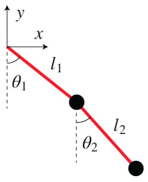

El doble péndulo es un sistema físico simple pero rico. El movimiento de los péndulos se rige por un par de ecuaciones diferenciales acopladas, que resolveremos utilizando el método de Euler. Para simular el sistema, primero creemos los métodos para dibujar las bolas y las cuerdas que las mantienen juntas.
Ahora, tenemos que descubrir la forma en que se moverán las cuerdas y las bolas, es decir, tenemos que resolver las ecuaciones de movimiento del sistema. Comencemos expresando las coordenadas cartesianas de los dos péndulos.

$$x_1 = l_1\sin \theta_1$$
$$y_1 = -l_1\cos \theta_1$$
$$x_2 = l_1\sin \theta_1 + l_2\sin \theta_2$$
$$y_2 = -l_1\cos \theta_1 -l_2\cos \theta_2$$
Resolveremos las ecuaciones de movimiento en coordenadas polares y vamos a usar el L=T lagrangiano $L = T- V$ para derivarlos.
La energía cinética del sistema es
$$T = \frac{1}{2}m_1(\dot{x_1}^2+\dot{y_1}^2)+\frac{1}{2}m_2(\dot{x_2}^2+\dot{y_2}^2)$$
Que se expresa en coordenadas polares es
$$T = \frac{1}{2}m_1h_1^2\dot{\theta_1}^2+\frac{1}{2}m_2\left(h_1^2\dot{\theta_1}^2+h_2^2\dot{\theta_2}^2+2h_1h_2\dot{\theta_1}\dot{\theta_2}\cos(\theta_1-\theta_2)\right)$$
La energía potencial del sistema es
$$V = m_1gy_1+m_2gy_2 = -(m_1+m_2)gl_1\cos \theta_1 - m_2 g l_2 \cos \theta_2 $$
Las ecuaciones de Lagrange para $\theta_1$ and $\theta_2$ son
$$ \frac{d}{dt}\left(\frac{\partial L}{\partial\dot{\theta_i}}\right) - \frac{\partial L}{\partial \theta_i} = 0 $$
Trabajando los detalles de las dos ecuaciones de Lagrange, terminamos con
$$ \ddot{\theta_1} =\frac{g\left(\sin \theta_2 \cos (\theta_1-\theta_2)- \mu\sin \theta_1\right)-\left(l_2\dot{\theta_2}^2+l_1\dot{\theta_1}^2\cos (\theta_1-\theta_2)\right)\sin (\theta_1-\theta_2)}{l_1\left(\mu-\cos^2 (\theta_1-\theta_2)\right)}$$
$$ \ddot{\theta_2} = \frac{g\mu(\sin \theta_1\cos (\theta_1 - \theta_2) - \sin \theta_2)+\left(\mu l_1\dot{\theta_1}^2+l_2\dot{\theta_2}^2\cos(\theta_1-\theta_2)\right)\sin(\theta_1-\theta_2)}{l_2\left(\mu-\cos^2 (\theta_1-\theta_2)\right)}$$
Donde $ \mu = 1 + \frac{m_1}{m_2}$.
Cómo se pronuncia
Ahora, para resolver las ecuaciones de movimiento para los ángulos, podemos usar el método de Euler. Para hacer eso solo tenemos que definir un intervalo de tiempo e iterar con el tiempo.
Las aceleraciones angulares, las velocidades y las posiciones para el instante $t+\Delta t$ calculan utilizando las mismas variables en $t$. Una vez que calculamos los nuevos ángulos, solo necesitamos actualizar las posiciones de las bolas y cuerdas y volver a dibujar los elementos.